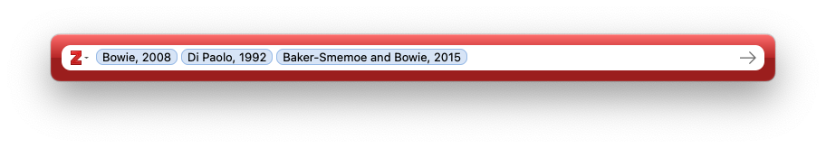

This page serves as a guide for how to get started with Zotero. It is meant to accompany my lecture on this topic in my Linguistics Tools and Research Methods courses, so it will be focused on what I think my linguistics students will need or want to see the most.
1 Getting started
Have you found yourself frustrated at how to keep track of all the academic PDFs on your computer? Have you tried to take notes as you read something, but aren’t sure where to keep those notes and how to link them to the PDF you read? Have you read something but forgot what article it was? Are you frustrated with citation formats and spending time making sure your references section matches your in-text citations? Boy do I have a solution for you!
Zotero is a citation management software. That means it can basically solve all those problems for you. It’s open-source and free to use for most people’s needs.1 The way that I’ll introduce it in this post, it is a stand-alone piece of software that you’ll need to download to your computer, so you’ll need something heftier than a Chromebook or a tablet to get it to work. You can read more about Zotero and its history on Wikipedia. There are competitors out there, Mendeleyand Endnote are probably the most well-known, but I think Zotero is the best.
1 There is a subscription service, but in the decade that I’ve been using it, I’ve never felt like I needed it, nor have I felt that my experience was inferior.
To install Zotero, simply go to Zotero.org and follow the links to download it to your computer. You can install the Zotero connector and mobile app if you want, but I won’t be covering it in this tutorial. Later on, we’ll talk about the word processor plug-ins, which you can install here. Go ahead and open Zotero to get started. It should look something like when when you open it up (you can ignore the various libraries I have on the side of mine):

An empty library is not very useful. Let’s start adding material to our library.
2 Adding things
2.1 With a DOI or ISBN
There are multiple ways you can add things. The best way is to find the DOI of the thing you want to add and use that. A DOI is a digital identifier object: it’s a stable link to the location of that thing online. Here’s the webpage for an article I’d like to add to my Zotero library. Most articles nowadays have a DOI somewhere among the citation information. I’ve highlighted it on this page.
I’ll copy that string of characters, 10.1353/lan.2016.0078, and go over to Zotero. There’s a little icon that’s meant to look like a magic wand. If I click on that, and paste in the DOI, and hit enter, Zotero will automatically fetch the information about that article and add it to your library.
You can see that it adds a whole bunch of things automatically2. On the right panel, there is lots of important metadata about the article, like the author, journal, and where to find it online. Sometimes Zotero will take a snapshot of the webpage so that you can easily find information if it wasn’t added automatically.3 Sometimes it’ll even download the PDF for you if it can. If it can’t but you can download it manually, you can just drag the file over the entry (in the center panel of Zotero) and the PDF will be added to the entry.
2 This, of course, only works if you have an internet connection.
3 I personally never use that, so I’ve changed the setting so that Zotero doesn’t do that.
The great thing about adding via DOIs is that those links are now included in many reference sections. So if you’re reading an article and you come across a citation that looks interesting, you can just copy the DOI directly from the reference and add it to Zotero without even needing to open a web browser!
You can add books by their ISBN if they don’t also have a DOI.4 Here’s a book I’d like to add.
4 I have sometimes had trouble adding things by their ISBN. Not sure why. Your mileage may vary.
Just like I did before, I’ll copy it and add it to Zotero by clicking on the magic wand. Now I have two entries in my Zotero library.
There are other kinds of unique identifiers that you can add in this way (see more here), but those are the main two that linguistics students will need to know about.
2.2 With a PDF
Sometimes, you already have the PDF that you’ve downloaded from the publisher’s website and you just want to add it to your library. Fortunately, you don’t need to go to the publisher’s website again because you can just drag and drop a PDF directly into your Zotero library. If the PDF contains all the right metadata—and they usually will contain at least some—Zotero will pull that metadata out and create an entry with it. You can even drag and drop multiple PDFs all at once, so if you need to transfer an entire folder to Zotero, you can easily do so.

Please note that this works best for newer PDFs and ones that come directly from a publisher’s website. If you have a scan, a PDF of an older document, something that has been modified in some way, a PDF from a site that doens’t have a lot of metadata (like a working papers), or an unofficial PDF, this method might not work and it’ll just simply add the PDF as its own entry without any metadata. You can see that this is what happened to the Di Paolo (1992) paper here. In such cases, you’ll need to add the entry manually.
Read more about adding items via PDF here.
2.3 Manually
Adding entries manually is not hard, but you do need to know what kind of information you need to have and what you can leave out. Of course, you can add tons of metadata for every item, but it takes time to fetch and type that information, so it’s good to know what you can leave out. For now, I’ll focus on articles and books, but when we get to the items types below, we’ll go into more depth into the other kinds a student may need to know about.
Let’s start with the case that we have here, where we dragged a PDF over, but there wasn’t any metadata with it. In this case, it’ll be a journal article—I can tell based on the metadata at the top of the PDF. So, I’ll right click on the PDF in Zotero and click on “Create Parent Item…”. It’ll ask for a DOI or to do it manually, so I’ll do it manually.5 When you first create item, it won’t assume anything about what kind of item it is, so it’ll format it as a generic “Document.” You’ll need to go and change the “Item Type” at the top of the metadata panel on the right to “Journal Article.”
5 In this case, there actually is a DOI if I go back to the publisher’s website. But I’ll pretend there isn’t one so I can practice adding it here.
The most important pieces of information you’ll need for a journal article are the title, the author(s), publication (meaning the name of the journal), volume, issue, pages, date, and (if available) DOI. Usually you can get most of that information on the front page of the paper itself, so I’ll double click on the PDF to open it so I can see it and the metadata at the same time. In this case, pretty much all the information I need is at the very top, so I’ll go ahead and add that in. Again, you could go and fetch other information if you really wanted to, but those are the most important. Here’s what that looks like now that I’m done:
If you’re creating an entry from scratch, meaning you don’t have a PDF at all but want to add the citation to your Zotero library anyway, the way to do that is to click on the New Item icon to the left of the magic wand. From there, you’re presented with a large list of item types. The most common ones are at the top. Click on “Journal Article” and a new blank entry appears in your Zotero library. You would then add the metadata manually the same as before.
2.4 Check metadata
One important thing to keep in mind when adding things automatically is that the metadata may not be correct. It is always a good idea to double-check the metadata to make sure it is accurate. DOIs usually give the most accurate metadata in my experience, with dragging-and-dropping PDFs a little less reliable. Things to watch out for are the Item Type (i.e. if the article comes from a journal, make sure Zotero knows it’s a journal article). Make sure names are spelled correctly and are in the right order. Titles are commonly imported into Zotero in all caps, so you’ll need to manually change those back to lowercase.
It is worth the time to check if things get imported properly. It’ll always be correct from then on out and you won’t have to think about it again. You can read more about editing items here.
3 Item types
Let’s pause a moment and consider the different item types now. As you saw in the dropdown list, there are lots of kinds of items that Zotero can handle. Each one has its own important kind of metadata. For example, if you’ve got a book, you need to note the publisher. If you’ve got a journal article, you need to note the volume and issue. So, as you add content to your library, you should make sure that each entry is the right Item Type. I’ll focus on three main ones in this section: articles, books, and book chapters.
3.1 Articles
We’ve already talked about articles already. But since they’ll likely be the most common Item Type in your library, it’s worth repeating what the most important information is:
- Title: Make sure it’s not in all caps. If there are special characters, makes sure those are typed correctly. If there are italics or other rich text in the title, you can add that formatting with html codes, `like this.
- Author(s): Make sure you have the last name first. If there is more than one, a little plus icon appears after you type the first one and you can add additional authors. Make they’re in the order that they appear in the publication.
- Publication (meaning the name of the journal)
- Volume: Typically a journal has one volume per year. It’s usually an integer, like “12”.
- Issue: The number of times the journal publishes articles per year. Usually it’s a number but sometimes it’s a season, like “Fall 2024”.
- Pages: The pages of that issue that the article appears in. This is getting to be antiquated as things move to digital, but even some online-only journals have page numbers still.
- Date: The year of publication. You can be more specific and put a month and day if you want, and it won’t hurt anything as long as you have a year.
- DOI: It may not be available for everything, but most newer things will have this.
Ensuring that you have all this metadata correct is good for lots of reasons, but it’ll be most apparent when it comes time to export citations and bibliographic entries later on.
3.2 Books
There are five pieces of information you’ll need to properly cite a book. By “book”, I mean a “monograph”, which is a fancy term for a book written by a single author (or set of authors). This is in contrast to an edited volume, which is where each chapter is written by a different author. We’ll get to those in the next section.
- Title: The title of the book. Again, make sure it’s properly formatted.
- Author(s): The author of the book. Usually for a monograph, there’s just one.
- Date: The year the book was published.
- Publisher: The company that publishes the book.
- Place: The location of the publishing company. This is not required in some citation styles anymore. If there is more than one (like “New York / London”), I just put the first.
Books have additional metadata information that is good to add if it’s relevant.
- Volume and Volume Number: For a multi-volume work, this is where you’d put that. An example of a multi-volume work would be this Varieties of English four-volume series, which has volumes on the British Isles, The Americas and the Caribbean, the Pacific Islands and Australisia, and Africa, South, & Southeast Asia.
- Series and Series Number: If a book is part of a larger series, you should put the name and number of that series. An example would be the Dialects of English series or the Publications of the American Dialect Society, each of which have many books that are authored by different people but that form a cohesive series about some topic. There may be series editors. You can add the series editor by initially adding them as an author, but then clicking on “Author” and changing their role to “Series Editor.”
- Edition: If you’re working with a later edition of a book (i.e. 2nd edition, 3rd edition, etc), you should put that here. These editions are usually printed on the cover of the book. This is good information to have because page numbers of specific passages change from one edition to the next, as well as some content, so it’s important to make sure you’re citing from the correct edition.
Other information that you can add if you want would be the # of Pages, ISBN, URL (if it’s different from the DOI), and Call Number, but that’s not necessary.
3.3 Book Chapters
If you are citing one chapter from a monograph, then you cite the entire book using the method in the previous section. However, some books are called “edited volumes.” One or more editors solicit contributions from people and compile those into chapters of a book. The chapters usually go together in some way, hence the theme of the book, and the editors write the introduction and may contribute (to) one or more chapters. The chapters are all independently written by different authors though and serve as stand-alone contributions to the overall theme. You know you’re working with an edited volume when the cover makes it clear that the editor(s) is an editor, usually with “edited by” before or “ed.” after their name. The chapters also list individual authors too rather than the editor’s name or no name at all. If you’re citing a chapter from one of these books, you’ll need to make sure it’s called a “Book Section” in Zotero. Here’s the key information you need.
- Title: This refers to the title of the chapter.
- Book Title: This refers to the title of the book.
- Author: The author of the chapter.
- Editor: The editor of the book. I wish this were clearer in Zotero, but there isn’t a dedicated spot for this information by default. You’ll have to add the chapter author first, and then press the little plus sign, add the editor, and then change their role to editor. In some cases the chapter author may be the editor, in which case you have their name twice.
- Pages: The page range that the chapter occupies in the book.
- Plus all the other information for a book, like the date, publisher, place, volume, series, and edition, if relevant.
3.4 Other item types
Of course there are tons of other kinds of items in Zotero. The ones you might encounter are conference paper, theses, and software. I encourage you to look through those item types and see what kind of information you’d need.
4 Organization
When you only have a few items in your Zotero library, you don’t have to worry much about organization. But once the number of items exceeds your screensize, organization becomes a much bigger issue. I’ve been using Zotero for 11 years and I have something like 10,000 items in it. So, being able to keep track of and find what you have is something you should learn to do. Fortunately, Zotero has a variety of ways to do this.
4.1 Column headers and sorting
First, your library is organized into a spreadsheet-like format. There is one row for each item and one column for each piece of metadata. Like other spreadsheet interfaces, you can click on the columns and it’ll sort your library by that column.
You can also specify which columns you’d like to show. If you right-click on a column name, you’ll see a dropdown list of columns you could include. Ones that are currently shown have a checkmark next to them. You can click and drag columns around to suit your preferences. You can click and drag the edges to change their width. My preference is to have the title, creator, year, publication, item type, date added, and attachments.
See more about columns and sorting here.
4.3 Folders (“Collections”)
Rather than tags, I like to organize my library into folders (or, as Zotero calls them, “Collections”). This resembles a typical files structure where you have folders and subfolders and content within them.
You can create a collection by right clicking on the “My Library” in the left panel and clicking “New Collection…”. You can create a subcollection by doing the same but selecting “New Subcollection…”. You can drag and drop collections however you want.
To add something to the collection, you just drag and drop an item in your main library view onto the folder icon. The way Zotero does things is that it maintains just one copy of the item, regardless of how many collections it appears in. So, if you drag a single item into five different collections, you’ll still have just one version of it. This is useful because PDF highlights, metadata, and notes are always there, regardless of what collection you view the item in.
When you click on a collection that has subcollections, there are two ways of organizing it. For some people, it makes sense to have the parent collection also contain all the items in the daughter collections. For other people, it’s more useful to be able to add items into the parent collection without the daughter collections getting in the way. I forget which is the default, but I’ve got my Zotero set up to do the latter. You can toggle between them by going to “View > Show Items from Subcollections”.
I use collections pretty extensively. I have four main categories of collections:
- Classes: This contains one subcollection for each course I took when I was a student and for each course I teach now as a professor. It’s a mixed bag of readings I could assign out and ones that have been helpful for me when prepping.
- Dialectology:6 Because the bulk of my research is on American dialectology, I have a subcollection for most US states and Canadian provinces, organized roughly by dialect region. So whenever I come across a new paper where the data was targeting a particular place, I throw it in the appropriate folder. I’ve been doing this for years, so now I can quickly click through and find everything that I’ve encountered about Kansas or Idaho or whatever. It’s very handy. ▶︎
- Projects: I have a subcollection for each project I’m working on. This is helpful even for potential projects or back-burner ones because, like the dialectology stuff, whenever I encounter something that might be relevant to it, I throw it in the folder and move on. When it comes time to do a lit review, I’ve got a list of materials right there.
- Quantitative stuff: I have subcollections for a variety of quantitative things. Like general data science things, papers that introduce software, quantitative linguistics textbooks and tutorials, packages and software, and statistics textbooks.
6 Here’s a peek at my dialectology collection.
You can of course organize your libraries however you see fit, but this is what I’ve settled on after years of using Zotero.
A new feature that I just learned about is that you can see what collection an item is in. On the right edge of the screen when you view an item, there’s a “Libraries and Collections” icon. It looks like a building with pillars and a folder. That’ll jump you to a section of the right panel (under the metadata) that shows which libraries and collections that item is in. So if you primarily use the collections as your main organizational tool, this is a nice way to see all the ways you’ve categorized it. I’ve been wanting a feature like this for a while, so I’m thrilled to see it added.
See more about collections here. Also, follow that link if you feel compelled to make sure every item is in a collection and not just a stray paper, because Zotero automatically has a folder for you for unfiled items.
4.4 Basic and advanced searches
Zotero offers some useful search features. At the top right of the main library window, you can see a search box with a magnifying glass and the words, “Title, Creator, Year”. Type in whatever you want to search here and it’ll search through your Zotero library. I appreciate that if you click on the little downward arrow next to the magnifying glass, there are three levels of searching.
- The Title, Creator, Year search searches through the title, creator, year, and publication only. It is helpful if you are looking for a particular study, like “Eckert 2012” anything with “Northern Cities Shift” in the title. From what I’ve seen, students tend to refer to papers by their titles. That is an intuitive thing to do, but, for whatever reason, academics usually don’t refer to papers that way. We usually refer to them to how we’d cite them in a paper, so by author and year. Regardless, this search lets you do both.
- The All Fields & Tags search is more comprehensive in its metadata. It’ll search through all fields, tags, and notes. I don’t know if I’ve needed to search through other fields, but I guess if you want to find everything from a publisher like “De Gruyter” you could. I’m not sure if searching tags is that helpful because you can filter by tag anyway. But being able to search your notes is very handy. In fact, you could take advantage if this if you want by putting certain character sequences in your notes so that you can find them quickly.
- The Everything search looks through all metadata but also the entire text of the PDFs! This is a really cool feature. If you find yourself remembering vaguely something that a paper said, but forgot where you read it, you can quickly find it here. (A more general find on Google Scholar, for example, might turn up many false positives.) This is also good for students looking for research ideas, because you can search phrases like “beyond the scope” or “future work” and find all instances of those in the papers you’ve read.
There is an advanced search in Zotero. For that, I encourage you to look through the documentation here to learn more about that.
4.5 Merging
The last organization tool I want to mention is merging. Sometimes, you forget something is in your library and you end up adding it multiple times. This not only leads to messiness in your library, like having PDF highlights on one entry but notes in a different entry, but it can cause issues when you go to cite things. For example, if you add Fridland et al (2016) three times, Zotero thinks those are three entries. If you happened to cite each one, you’d end up with Fridland et al (2016a, 2016b, 2016c), which is not what you want. Fortunately, Zotero makes it easy to fix this.
Zotero actually automatically and constantly checks for duplicate entries. In your library, there is a top-level folder that’s automatically created called “Duplicate items”. If you click on that, you’ll be presented with potential items. Sometimes it gets things wrong though. I have a three-volume set, where each volume is in my library as its own entry, and Zotero thinks they’re duplicates because they have the same title. I’ve noticed though that items have to be the same type, so some duplicates might not be spotted. So, if I save something as a conference proceedings one time and a journal article another time, Zotero won’t catch it.
If you find a duplicate, you can click on one and it’ll highlight the other. You’ll then see a window on the right that has the metadata of them both. You can toggle between them and choose one to be the main one that the other one merges into. You can mix and match metadata if you’d like using that window too. But when you click on “Merge 2 items” they’ll merge into one, and any associated files (PDFs, notes, web snapshots) will be combined.
See more about merging and duplicate files here.
5 Taking notes
It’s probably implied already, but it’s good to say explicitly that in addition to keeping track of all your PDFs, you can also read them directly in Zotero without leaving the app. This is how I read academic content. Like many other PDF readers, Zotero gives you options for highlighting things, which will come in handy in just a second. See here for information about the PDF Reader.
But, while you’re reading, you should also take advantage of Zotero’s incorporated note-taking feature. This is extremely handy for me. I often take careful notes while reading articles and it’s nice to have them saved together with the PDF itself and the item’s metadata.
There are two ways of adding a note to a Zotero entry. One is to click on the entry in your library and on the top panel, click on the note icon and click “New Item Note”. 7 The other way of adding a note is to open a PDF directly, and on the far right of the screen, click on the notes icon, and then the plus sign next to “Item Notes” and click on “Item Item Note”.
7 The only times I use the “New Standalone Note” is if I need to make a comment about a (sub)collection. I’ve done this when explaining what the subcollection is for (sort of a readme file) or if I need to summarize the contents really quickly. The note is associated with that collection so whenever I jump to that folder, it’s there.
Either way, once you do that A new note item appears under that entry, and a note-taking view appears in the right panel. From here, you can treat it like any other basic word processor. You can add headers, change fonts, and other rich text things (like italics, hyperlinks, images8).
8 One time I got an old Master’s Thesis on Inter Library Loan. They wouldn’t let me take it out of the Special Collections room. So I ended up taking a lot of photos of the most important pages. I was able to incorporate those into a note.
There are several reasons why I add notes to my Zotero entries.
- Every time I add something to my library, I try to add a why did I add this note. It’s easy to add a lot of things to your library, especially with the online plug-ins. It can quickly get overwhelming when you have many entries that you don’t remember adding. So, after checking the metadata, I add a quick note saying something like, “I saw this cited in Holliday (2024) about intonation and it looked interesting” or “This popped up on my list of recommended books on Amazon” or “we read this in my semantics class”. That’s it. Just a reminder to your future self.
- I also add these notes when I add things to certain subcollections. So, if I’m reading a paper and they use a particular method I’m interested in, I’ll add that to the collection on that method and say, “On page 62 they mention Pillai scores” or whatever.
- Relatedly, I sometimes add notes to things as reminder of who cites this and why. This is helpful for when you’re doing a deep dive into a topic and you notice the same citation over and over but you haven’t read it yet. Or, sometimes I’ll add something to your library that I don’t have access to (a book from the 1980s or something) but I want to keep track of what people have said about it. After seeing a few citations, I can get a feel for what people know about it.
- The most detailed notes are ones where I take notes during or after reading it. I start mine with information about when and where I read it (“Read August 25–26 while on the bus”). If it’s an important paper for me, I’ll leave extensive notes about what I want to remember. The goal for these notes is to be detailed enough so that in a few years if I need to come back to this paper, I can get the gist from just my summary. In other cases, I’ll leave a few paragraphs of comments after I’ve finished it so I can remember the most important things about the paper.
- It’s also useful to leave subjective commentary about the piece. If I intersperse my comments within the larger summary note, I make it clear with formatting so that Future Me doesn’t think that those ideas were from the author. But usually I leave a paragraph at the top or bottom of my notes with thoughts about how great it was, how much didn’t like the methods, or other subjective evaluations.
Sometimes I’ll have multiple notes associted with a single entry, like if I need to hit more than one of these categories. You use whatever method you like with your Zotero library. In my opinion, it never hurts to take notes. But you do what works best for you.
The last way you can kinda keep notes is to generate a note from highlights in the PDF. If you use Zotero’s PDF reader and highlight text directly in Zotero itself, you can export those highlighted sentences into a single note. This is a handy way to summarize a paper for Future You to read without having to type everything out. It is also nice because it makes those highlights searchable using the “All Notes and Tags” search mentioned above.
If you want to go the extra mile in categorizing things, you can add tags to individual notes and you can add comments to individual highlights. I don’t need that kind of detail most of the time, but it’s there in case you need it.
For more information about here
6 Integration with Word and GoogleDocs
Zotero as a standalone piece of software does so much already. But the cherry on top is its integration with Microsoft Word and Google Docs. With these tools you never have to worry about formatting or making sure your references section matches your in-text citations.
6.1 Installation
I encourage you to go [here] for specific instructions on how to integrate these two for the tool that you plan on writing in. I’ll show screenshots in Word, but they’re basically the same across all platforms.
6.2 In-text citations
There are two main functions when using the integration tools. First are the in-text citations. When you’re typing in your document and you’re ready to cite something, you can click on the Zotero tab and then click on “Add/Edit Citation”. (Note: the Zotero application needs to be open on your computer for this to work.)
The first time you do this in a document, you’ll see a window asking about document preferences. Here, you’ll select which bibliographic style you want to use. Read more about these styles, including how to download new ones and switch between them, here. I almost always use the Unified Stylesheet for Linguistics, and if you don’t have that installed already, it is useful to do so.
Once that’s done, and every time you click on “Add/Edit Citation” from here on out in this document, you’ll then see a wide red and white bar that has a searchbox. Here, you can search for the item(s) that you want to cite. By default, Zotero will have right there the documents you have open or what you have highlighted in your library, so if you were just reading something, it’ll be there for you. If you need to cite something else, you can start typing search terms like the author, year, or title, and they’ll show up.
Click on the document you want to cite and you’ll see it added to the list. If you need to cite multiple documents, just keep on searching and adding. You can add as many as you want.

For now, let’s hit enter and see what that does to our document. You can see (below) that it adds them all as in-text citations in the way that in-text citations are formatted. I have my settings in Word such that when the cursor is in them (or any automatically generated text), it’s highlighted in gray. Note that the order of the citations in the document reflects the order in the red bar, so if you want to cite them in a particular order (alphabetical, chronological, etc) then you’ll need to be the one to do that.
There are ways to fine-tune how these get incorporated into the document, but let’s hit references sections before moving on.
6.3 References sections
So, let’s say you’ve written your paper and you’re ready to add your references section. As long as you’ve used Zotero to add all your entries, it knows everything that has been cited. With the click of a single button, you can add the entire perfectly formatted references section.
Back to Word, I’ll click on “Add/Edit Bibliography”. In just a couple seconds (maybe longer if you have a lot of citations), the bibliography is there! You never again have to worry about what goes in italics, where commas should be, alphabetizing your list, or making sure the in-text citations match the references section. It’s done!
The magical thing about this is that is regularly updates as you type your document. If you go back to the body of your paper and add a citation or remove one, the bibliography updates at the same time!
Now, hopefully you see the importance of making sure the metadata in your Zotero entries is correct. Word is just pulling information straight from Zotero, so if you’ve got wrong, missing, or badly formatted metadata in Zotero, it’ll show up here. In this case, I need to go back and fix the capitalization in that Bowie (2008) paper. This is also the reason why it’s important to make sure you have the right File Type in Zotero, because it’ll cite things incorrectly if it’s not stored in the correct way.
6.4 Customizing in-text citations
Going back to the in-text citations, there are some things you can do to make it work better for you. First, to edit an in-text citation, put your cursor anywhere in that generated text and click “Add/Edit Citation.” You’ll see the red search bar just as you left it. From here you can add more or, by hitting the backspace key, remove citations. Remember that the bibliography will automatically update when you do so.
There are some other features to be aware of. I’ll work from the bottom. First, you can omit the author. Zotero will just add the year in parentheses for this one. This is useful if you’re using the Author as a noun phrase in your actual writing. For example, you could say “Propredictate do is found in Utah (Di Paolo 1993)”, in which case you’d use the citation like normal. Or, you could say “Di Paolo (1992) finds propredictate do in Utah.” In this case, you’d type the name of the author and then let Zotero add the year. Another use is if you have multiple citations from the same person in a list, like “(Bowie 2003, 2008, 2012)”. In that case, I’d omit the author on all but the first one. Otherwise it’d say “(Bowie 2003, Bowie 2008, Bowie 2012)”.
The prefix and suffix options are nice, if you want to add brief additional commentary.9 So, if you want to say something like “In studies of grammatical variation in Utah (see, e.g., Di Paolo 1992 among others)…”, I would add “see, e.g.,” in the “prefix” slot and “among others” in the “suffix” slot. Note that the prefix and suffix content is always inserted inside the parentheses in your word processor.
9 Read more about these here.
Finally, you can add page numbers. You should always provide a page number when directly quoting somebody. As a rule of thumb, I also add page numbers whenever I cite a book. You can do that by adding the page in the “Page” part of the entry. Those page numbers get added according to the style that you have set for your document. In the case of the Unified Stylesheet for Linguistics, is a colon, space, and the numbers, separated by an en-dash.
If you want to cite something that’s not a page, but a figure, a footnote, or some other thing, you can cite that instead of a page10. You can of course mix and match these features however you want.
10 Zotero can handle many more things than what I’ve ever seen in linguistics research, but here’s the complete list
6.5 One-off citations
Finally, it’s worth pointing out that you don’t need to integrate with a word processor to generate bibliographic entries. If you right click an item in your Zotero library and click “Create bibliography from item”, you’ll see a window with some options. You can choose from the citation styles again, whether you want the int-text one or the bibliographic entry (you probably want the latter), and how you want to export it (you probably want to save it to your clipboard).
From there, you can paste it wherever, like an email or texting with your friends and family ;) The result will look just as it does in a bibliography section of a paper.
7 And so much more!
There is so much more to Zotero than what I could cover here. I encourage you to click around and get a feel for the software. You can also explore these topics:
- Feeds
- Related items
- Creating bibliographies within Zotero itself.
- Working with citaton styles
- Syncing across devices
- Groups
- Backups
- Zotero for mobile
Plus, you can read the official documentation, tutorials and guides written by other people, and numerous video tutorials.
I hope you find Zotero useful for you. Again, I couldn’t function as an academic without it. I was called a “Zotero Evangelist” by a former student, so hopefully this tutorial has convinced you that you should start using it too!